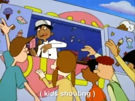
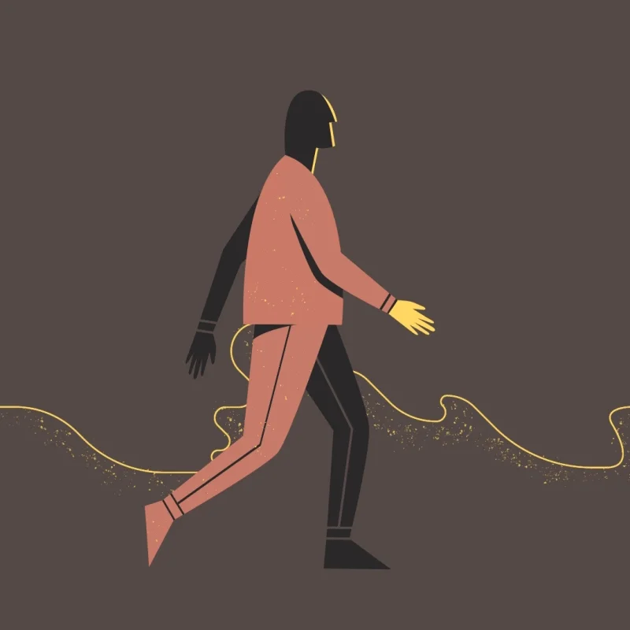
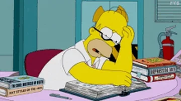
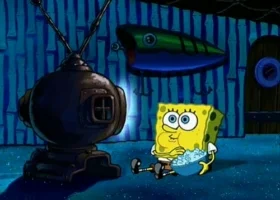

| |
Past
|
Present
|
Future
|
|
Simple
|
- Describe an action already completed
- Can be used with or without Adverb of time
|
- Express habits or general truth
- Describe a Future event as part of a plan or arrangement
|
- Express an action or circumstance which hasn't taken place yet
|
|
Continuous
|
- Express uncompleted action of the past
- Describe persistent habits of the Past

|
- Describe action going on at the time of speaking
- Express temporary action which may not be happenning at the time of speakingee
- Eg: They are swimming in the pool.
- John's driving his father's car while his own car is in the workshop.
|
- Express what will be going on at some time in the Future
- Express planned events
- Eg: You'll be missing the sunshine once you're back in England.
- This time next week I will be sun-bathing in Bali.
|
|
Perfect
|
- Describe a completed action of the past that happened before another event took place
- Eg: After he had finished work, he went straight Home

|
- Express past action which is not defined by a time of occurance
- Express an action which started in the past and has continued up until now.
|
- Express an action that will be complete before another event takes place
- Eg: By the time I finish ths course, I will have taken ten tests.

|
|
Perfect Continuous
|
- Describe an action in the past that began before a certain point in the past and conntinued up until that time
|
- Express an action which started at some point in the past and may not be complete
|
- Describe an action that will have happened for some time and will not be complete yet at a certain point in the Future

|